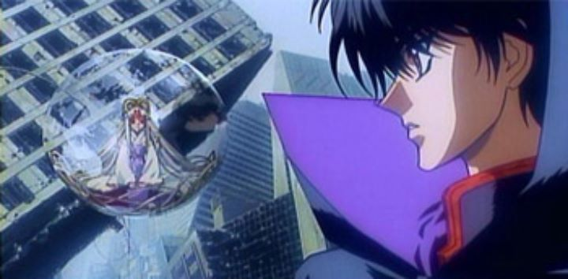

Disclaimer: This review refers to this movie as being called "X - The Movie," in order to differentiate it from "X - The Series" (both are officially just called "X"). Finally! More than two decades after the original release, I got my hands on a used DVD copy of the 1996 film "X - The Movie." Based on the box art (and a questionable DVD master that letterboxes the film, shrinking the widescreen movie for then-standard 4:3 televisions), this was likely one of the Manga Entertainment's first DVD releases (previously, they were still releasing VHS tapes). But while the franchise is arguably a classic and while the 2001 television series of the same name is still widely available on home video, the movie quickly went out of print, and as of 2019, still hasn't been rescued for re-release. But why would "X - The Movie" be so quickly forgotten? It appears that Manga Entertainment gave it big treatment at the time, even getting it officially rated by the American Film Board (a deserving "rated R"). Anime was growing in popularity, thanks to other recent releases, like "Ghost in the Shell," "Ninja Scroll," "Blood-C," and "Vampire Hunter D - Bloodlust." "X - The Movie" could probably sit well along those as a animation setpiece of the late 1990's. After having finally watched it, I can now understand why no one bothers with the movie: unlike other anime "classics," "X - The Movie" just isn't very good. For that matter, the series isn't great either, and it will be difficult to write this review without directly comparing the two."X - The Movie" is about a supernatural war that takes place at the turn of the millenia (1999) in Tokyo, Japan. After a vision of Kamui watching his naked mother ripping a sword from her womb, he flies to Japan: he is the hero foretold to win the war between the Dragons of Heaven and the Dragons of Earth, which will decide the fate of the human race. But Kamui's side isn't explicitly foretold: will he fight to save the planet itself, or the human race? It's a potentially interesting concept, especially when tied to imagery of elegant men and women with majestic black or white-feathered wings. It can also be a complex concept (especially when the bit regarding "two Kamui's" comes in), and not surprisingly, it's difficult to summarize into a single 1.5 hour film. Many early scenes come across as completely random, and the cast of over a dozen characters are introduced through narration within a minute of jump cuts. If you haven't read the original manga or seen the proceeding tv series, you probably wound't understand what was going on. At best, you would understand that there's a good side and a bad side fighting each other.... but let's compare this to the tv series. With more than 5x the runtime, "X - The Series" is painfully slow, and ultimately, the viewer realizes that there isn't much point to the characters in the first place. Only two (or possibly four) of the characters are relevant: the rest is window-dressing to attempt to justify the length of the story. So yes, I might recommend "The Series" to get a better sense of the plot, but given that it's a poor story no matter what format you choose, it's easier to watch the reduced runtime in "The Movie." Die-hard fans will end up watching both: while the plot and characters remain the same, the endings are complete opposites, each making up for a manga that never had a definite ending.  The main reason to seek out "X - The Movie" is the action. Unlike the broadcast-safe imagery in "The Series," "The Movie" is happy to revel in violence and nudity, and the occasional sex reference, to appeal to adult audiences. Clothing and wings ripple with detail, and there are several camera shots of skyscrappers collapsing brick-by-brick, likely a very expensive thing to animate pre-2000 (this was all done seemingly without even digital-paint software, too). CLAMP's character designs continue to look stylish in an attractive way. At the time, it's fair to say "X - The Movie" was a new benchmark in animation, the only significant issue being a lack of color (grey, brown and black are the dominate choices throughout). And while most of the action scenes look great, a few less important scenes got less attention in production. And as cool as the action is (and as much as there is within the movie)... the whole thing was still kinda boring. I was disappointed with the audio on the movie. The soundtrack is dramatic, but simply exists for the sake of the movie, and isn't as memorable as some of the songs from "The Series." The English dub is also surprisingly bad... I felt like I was watching a dub from a 1970's live-action martial-arts film, with bad delivery and lip-syncing that struggles to state all the information from the clunky script. "X - The Movie" is a perfect example of "style over substance." There is some merit to watching it purely for the action and violence, but no one should seek it out for the story. I'm torn as to whether anyone should seek out "The Movie" at all... "The Series" is easier to find and has a lot more detail with characterizations, but is a chore to watch. At best, "The Movie" is suited for older fans or curious youngsters who want to see what awesome anime from 1996 looked like. Like a lot of other anime from that time, it's worth watching once, but doesn't hold up well for anyone that doesn't have nostalgic ties.
- "Ani" More reviews can be found at : https://2danicritic.github.io/ Previous review: review_X Next review: review_xxxHolic